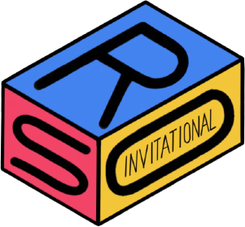

Director

Co-Directors
Vibav Tammisetti

Olivia Zeng

Event Supervisors
Aashay Mody

Dynamic Planet C
Aayush Singh

Dynamic Planet C
Aidan Joseph

Microbe Mission B
Allison Guan

Microbe Mission B
Allison Peterson

Fossils C, Flight B/C
Amit Prakash

Experimental Design B/C
Amy Peng

Disease Detectives B
Ecology B
Forestry B/C
Andrew Chang

Disease Detectives C
Fermi Questions C
Aneesh Iyer

Codebusters C
Experimental Design C
Anika Gupta
Anatomy & Physiology B
Optics B
Anna Zamastsyanina